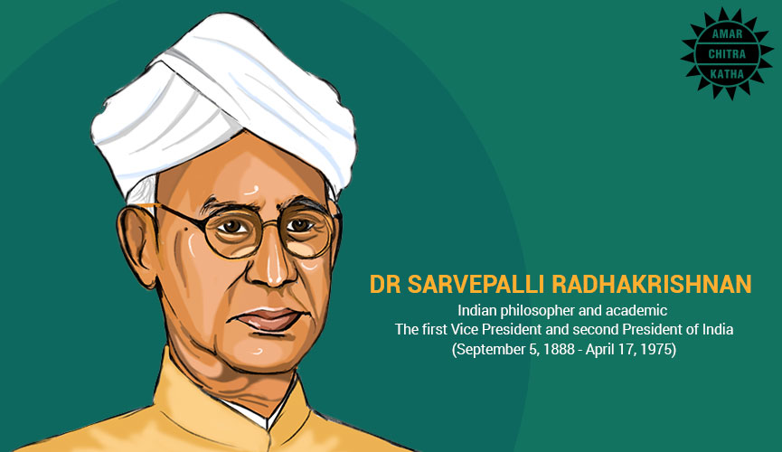

Dr. Sarvapalli Radhakrishanan
.accordion-flush
Dr. Sarvepalli Radhakrishnan, born on September 5, 1888, in Tirupati, India, emerged as a prominent figure not only as a teacher but also as an esteemed academic and influential politician. His early life in a modest Brahmin family did not deter him; instead, it fueled his determination to excel in academics.
Go somewhere
Dr. Sarvepalli Radhakrishnan, born on September 5, 1888, in Tirupati, India, emerged as a prominent figure not only as a teacher but also as an esteemed academic and influential politician. His early life in a modest Brahmin family did not deter him; instead, it fueled his determination to excel in academics.
Go somewhere